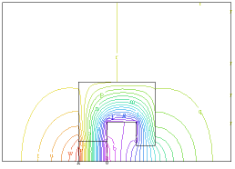

|
permanent_magnet |

  
|
|
permanent_magnet |
|
{ PERMANENT_MAGNET.PDE
This example demonstrates the implementation of permanant magnets in magnetic field problems.
FlexPDE integrates second-order derivative terms by parts, which creates surface integral
terms at cell boundaries.
By including magnetization vectors inside the definition of H, these surface terms correctly
model the effect of magnetization through jump terms at boundaries.
If the magnetization terms are listed separately from H, they will be seen as piecewise
constant in space, and their derivatives will be deleted.
See the Electromagnetic Applications section for further discussion.
}
title 'A PERMANENT-MAGNET PROBLEM'
Variables A { z-component of Vector Magnetic Potential }
Definitions mu S = 0 { current density } Px = 0 { Magnetization components } Py = 0 P = vector(Px,Py) { Magnetization vector } H = (curl(A)-P)/mu { Magnetic field } y0 = 8 { Size parameter }
Initial values A = 0
Equations A : curl(H) + S = 0
Boundaries Region 1 mu = 1 start(-40,0) natural(A) = 0 line to (80,0) |
 |
value(A) = 0 line to (80,80) to (-40,80) to close
Region 2
mu = 5000
start(0,0)
line to (15,0) to (15,20) to (30,20) to (30,y0) to (40,y0) to (40,40)
to (0,40) to close
Region 3 { the permanent magnet }
mu = 1
Py = 10
start (0,0) line to (15,0) to (15,10) to (0,10) to close
Monitors
contour(A)
Plots
grid(x,y)
vector(dy(A),-dx(A)) as 'FLUX DENSITY B'
vector((dy(A)-Px)/mu, (-dx(A)-Py)/mu) as 'MAGNETIC FIELD H'
contour(A) as 'Az MAGNETIC POTENTIAL'
surface(A) as 'Az MAGNETIC POTENTIAL'
End
Page url: index.html?applications_magnetism_permanent_magnet.html